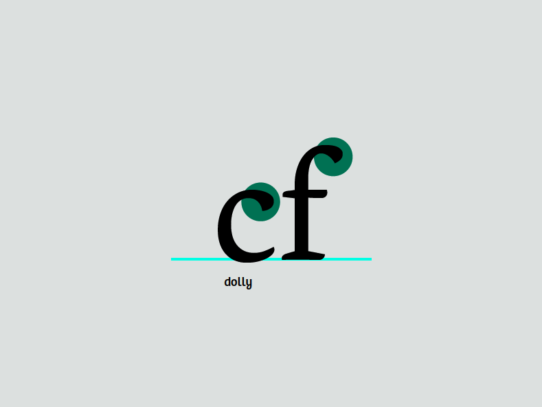
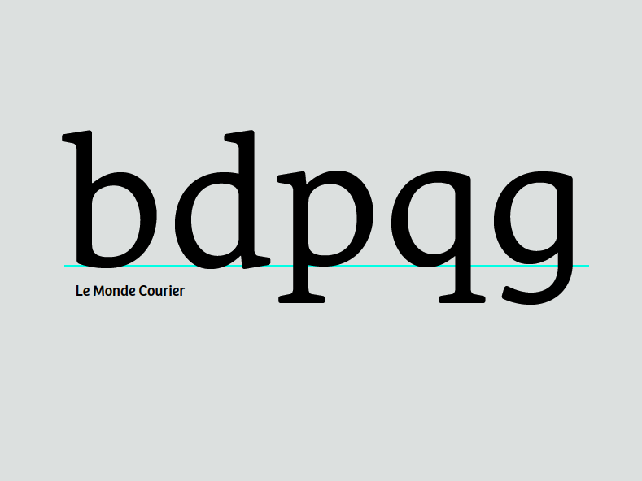
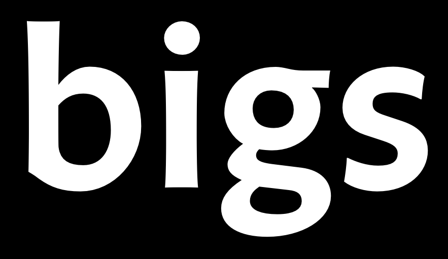
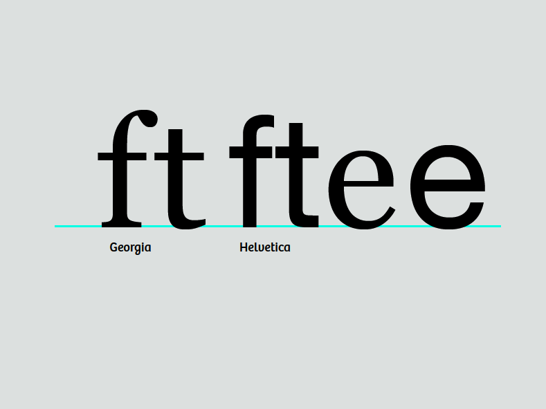
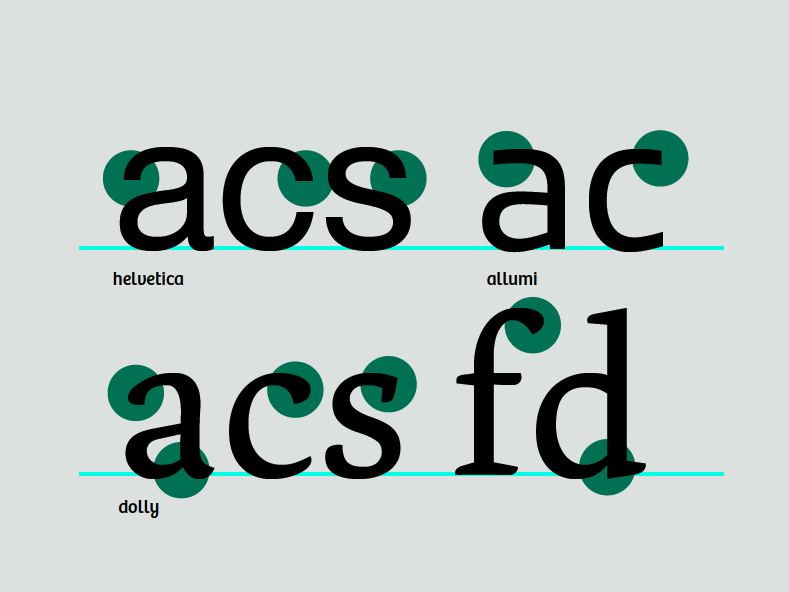

Заполнение нижнего регистра
Возможно, заметить в шрифтах, которые показаны раньше: хотя каждая буква имеет собственную форму, все они связаны друг с другом. Тщательно разобрав несколько глифов, получить строительные блоки почти всех остальных.
Обратить внимание на сходство между верхними вариантами c и f:

Их форма указывает на то, что они принадлежат к одной группе, хотя они немного отличаются. Концы являются одной из отличительных черт шрифта и обычно повторяются во многих формах букв.
Однако чрезмерная зависимость от модульности имеет особенности в дизайне, и поэтому следует избегать —, если только не требуется именно такой вид.
Продолжать с другими строчными буквами
Уже написано ‘n’. Отсюда можно легко получить ‘m’, ‘h’ и ‘u’ путем клонирования, растягивания и вращения соответственно. Есть небольшие изменения в расстоянии между основами в ‘m’ и ‘u’. На изображении ниже у ‘u’ изменился не только интервал, но и засечки. Это не происходит автоматически; задача - войти туда и раздвинуть точки.

‘i’ может быть производным от основы ‘n’. ‘l’ можно сделать из основы ‘n’ с некоторыми изменениями.
Создание ‘d’ из основы ‘h’ и ‘o’
Открыть окно глифа для буквы ‘d’, дважды щелкнуть под ‘d’ в представлении шрифтов. В представлении шрифтов скопировать ‘o’ и вставить в окно глифа для буквы ‘d’. Затем сделать то же самое для ‘h’. На этом этапе удалить ту часть ‘h’, которую не требуется использовать. Расположить оставшиеся части вместе так, чтобы они напоминали ‘d’.

Очевидно, что здесь еще есть над чем поработать. Внести некоторые коррективы. Сузить правую сторону ‘o’ там, где она встречается со штоком.

Чтобы улучшить оптический интервал и позволить форме выглядеть более сбалансированной, освободить немного места у засечек, добавив точку к ножке и сдвинув нижние точки вправо.
Ниже показано наложение начальной и новой фигур.

Теперь, когда известно, как собрать из имеющихся деталей, можно сделать и другие подобные буквы. Помнить о тонкостях, которые делают каждую букву индивидуальной, но при этом частью целой семьи.
Получение ‘b’, ‘p’, и ‘q’
Теперь, когда есть ‘d’, переворачивая и поворачивая, создать разумные ‘b’, ‘p’ и ‘q’. Опять же, помнить, как различаются засечки и контраст в каждой букве. Шрифт не обязательно должен делать это точно так же, но это одна из вещей, о которых следует подумать.

Создать ‘g’
Начать с ‘q’, растягивая и изменяя хвост, чтобы сделать одну чашу ‘g’. Никакие формы не напоминают бинокль ‘g’. Бинокль ‘g’ обычно должен быть заметно светлее, чтобы выглядеть правильно при установке других букв.

Переход к ‘f’ и ‘t’
У ‘t’ есть верхний элемент, но он обычно короче, чем верхний элемент других букв нижнего регистра. Для сравнения, ‘f’ намного выше и обычно занимает пространство буквы рядом с ним. У обех есть перекладины, которые обычно имеют одинаковую высоту, ширину и толщину. Часто можно копировать из одной в другую.

Теперь создать ‘e’
‘e’ будет во многом основано на ‘o’. Перекладина у ‘e’ ниже, чем у ‘t’, но имеет такую же толщину. Крючок внизу ‘e’ будет сообщен нижней части ‘t’.
Из ‘e’ происходит ‘c’
Создание ‘c’ из ‘e’ предполагает удаление перекладины и добавление терминала вверху. Верхняя клемма ‘c’ может быть похожа на верхние клеммы других букв, таких как ‘a’ ‘f’ и ‘r’. Клеммы ‘c’ также могут служить основой для ‘s’. ‘e’ также может влиять на пропорции вашего ‘a’.

‘v’, ‘w’, ‘x’, ‘y’, и ‘z’
Эти буквы несколько сложны, поскольку у них нет форм, связанных с другими буквами. Означает, что требуется просто прыгнуть и нарисовать ‘v’. Сделать линию вниз такой же толщины, как толстые стебли, и сделать линию вверх такой же тонкой, как более тонкие штрихи в других буквах. Если есть ‘v’, есть базовый план для ‘w’ и ‘y’. Для ‘x’ и ‘y’ сосредоточиться на сопоставлении контраста с остальной частью дизайна, компенсируя при этом иллюзии, возникающие в диагональных и пересекающихся диагональных формах.
Отношение к столицам
Работая над строчными буквами, полезно помнить, что их форма является результатом многовекового процесса, в ходе которого заглавные буквы Roman с их прочными засечками постепенно менялись, чтобы их было легче быстро писать курсивом. Повторное добавление засечек к этим cursive forms, получившее сейчас широкое распространение, в то время было историческим анахронизмом.
{kind=link}